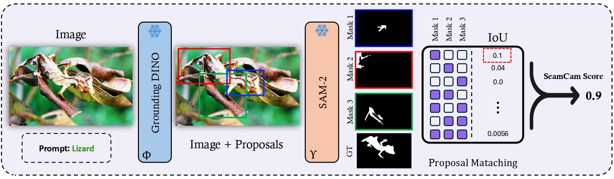
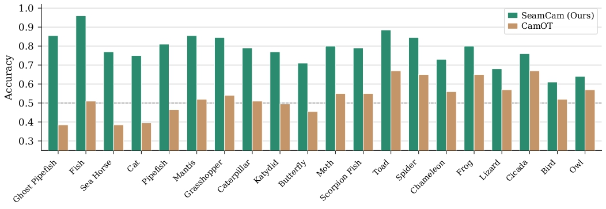
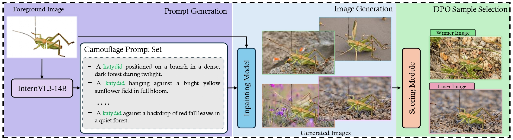
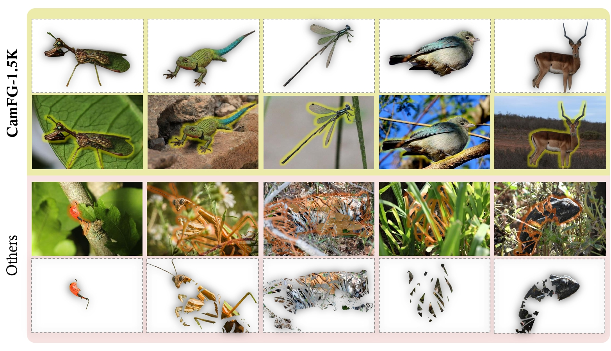

SeamCam: Quantifying Seamless Camouflage via Multi-Cue Visual Detectability
A perceptually grounded metric for camouflage evaluation and generation.
What we built, and why
Animals are described as effectively camouflaged when they blend seamlessly with their surroundings, yet no standardized quantitative measure of this seamlessness exists. We address this gap by framing camouflage evaluation as a visual localization problem: a well-camouflaged animal is one that remains difficult to detect even when its category is known.
We introduce SeamCam, a metric that quantifies how detectable an animal is from the available visual evidence. Given an image and a target species, SeamCam generates category-conditioned detection proposals, extracts segmentation masks, and identifies the subset whose collective union yields the highest IoU with the ground-truth mask — the SeamCam score is one minus this maximum recoverable localization signal, where a higher score indicates stronger camouflage.
In a human two-alternative forced-choice study with 94 participants and 2,390 comparisons, SeamCam achieves 78.82% agreement with human camouflage difficulty judgments, outperforming the strongest baseline by ~25 points. We further use SeamCam as a preference signal for Direct Preference Optimization to fine-tune a diffusion-based inpainting model, and release CamFG-1.5K, a curated benchmark of 1,521 fully-visible animals for unbiased camouflage-generation evaluation.
Three numbers worth remembering
SeamCam is a category-aware ideal-observer metric. It cares about whether evidence integration succeeds, not about what made it fail — so it correctly rewards both standard background-matching camouflage and disruptive coloration, while remaining stable across detector/segmenter backbones (77.5–79.7% across four pipelines).
Camouflage as failed localization
Given an image \(I\), ground-truth mask \(M^*\), and species name \(c\), SeamCam produces category-conditioned proposals, segments each, and asks: what is the best subset of those segments at recovering the animal? Whatever that best subset can achieve is the upper bound on detectability — and one minus that is the score.
This formulation is naturally robust to two common detector pathologies: duplicate proposals don't change the max-union IoU, and noisy weak detections are absorbed because the maximization only ever picks subsets that help.

What 94 people thought
We ran a two-alternative forced-choice study: participants saw image pairs and chose "which is more camouflaged?". With ties dropped, attention-screened catch trials, and pairs with fewer than three valid responses excluded, we had 2,290 valid pairs and 94 participants.
| Metric | Human Agreement | Δ vs. Chance |
|---|---|---|
| CamOT | 53.89% | +3.89 |
| SeamCam (ours) | 78.82% | +28.82 |
McNemar's paired test on the 2,271-pair shared subset gives \(\chi^2_{cc} = 300.67\), \(p < 10^{-67}\) — SeamCam agrees with humans where CamOT disagrees roughly 3.2× more often than the reverse. Per-species Wilson intervals place SeamCam above chance for all 20 species in the study.

SeamCam as a training signal
We use SeamCam to mine hard negatives for Direct Preference Optimization of an SD-V2 inpainting model: real camouflage images are winners; the highest-scoring synthetic candidates (most convincingly camouflaged among generated alternatives) become losers.

Ablation: training signal on SD-V2 base
| Training Signal | KID ↓ | FID ↓ | HPS-v2 ↑ | CamOT ↑ | SeamCam ↑ |
|---|---|---|---|---|---|
| Zero-shot | 0.0258 | 88.28 | 0.190 | 0.3619 | 0.1824 |
| LoRA + SFT | 0.0248 | 84.28 | 0.193 | 0.3641 | 0.2519 |
| DPO (Random) | 0.0187 | 78.04 | 0.192 | 0.3874 | 0.2565 |
| DPO (CamOT) | 0.0168 | 77.26 | 0.193 | 0.4352 | 0.2995 |
| DPO (SeamCam) | 0.0139 | 71.25 | 0.195 | 0.4144 | 0.3811 |
DPO (CamOT) gets the highest CamOT score — but that's in-distribution reward hacking. The independent metrics (KID, FID, HPS-v2) all favor DPO (SeamCam), confirming the gains are real.
Comparison on CamFG-1.5K
| Method | KID ↓ | FID ↓ | HPS-v2 ↑ | CamOT ↑ | SeamCam ↑ |
|---|---|---|---|---|---|
| LCG-Net | 0.1455 | 248.58 | 0.158 | 0.4263 | 0.2954 |
| TFill | 0.0669 | 131.30 | 0.148 | 0.5067 | 0.3571 |
| LDM | 0.0423 | 99.43 | 0.165 | 0.3751 | 0.3474 |
| RePaint-L | 0.0266 | 101.21 | 0.172 | 0.3930 | 0.3501 |
| LAKE-RED | 0.0157 | 70.65 | 0.171 | 0.3967 | 0.3639 |
| DPO (SeamCam) | 0.0139 | 71.25 | 0.195 | 0.4144 | 0.3811 |

CamFG-1.5K
Existing camouflage datasets contain images that are already partially camouflaged, cropped, or occluded — confounds that systematically bias the evaluation of generation models. CamFG-1.5K eliminates these confounds by construction.
1,521 high-resolution iNaturalist images, each containing a complete, well-segmented animal with minimal occlusion. The dataset spans more than 1,000 species across six taxonomic groups (insects, reptiles, amphibians, fish, birds, mammals) and multiple biome types. It will be publicly released to support reproducible benchmarking.

Cite this work
If SeamCam, CamFG-1.5K, or our DPO recipe is useful in your research, please cite:
@inproceedings{monsefi2026seamcam,
title = {SeamCam: Quantifying Seamless Camouflage via Multi-Cue Visual Detectability},
author = {Monsefi, Amin Karimi and Meyarian, Abolfazl and Khurana, Mridul
and Wang, Shuheng and Navard, Pouyan and Zhang, Cheng
and Karpatne, Anuj and Chao, Wei-Lun and Ramnath, Rajiv},
year = {2026}
}